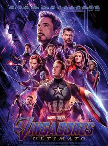

Thanos
Thanos é um dos filhos de A’Lars, também conhecido como Mentor. Ele nasceu no seio da sociedade Eterna, uma raça antiga de humanos geneticamente modificados por Celestiais, uma raça de extraterrestres misteriosos.
Filmes em que atuou

Filme 1
Thanos fica mais à espreita, vigiando tudo o que acontece em volta. Vocês vão aprender muito sobre Thanos em Guardiões, pode ter certeza. Certamente será mais que um rosto no espaço e um sorriso. Será muito mais que isso!”, explicou à Empire.

Filme 2
Em Vingadores – Guerra Infinita (Avengers – Infinity War), Thanos, cansado de ver seus capangas derrotados, lidera pessoalmente seu exército em busca das joias do infinito, que lhe darão controle total sobre o universo e a realidade. E, no caminho, enfrentará quase todos os heróis da Marvel.
Filme 3
Após Thanos eliminar metade das criaturas vivas, os Vingadores têm de lidar com a perda de amigos e entes queridos. Com Tony Stark vagando perdido no espaço sem água e comida, Steve Rogers e Natasha Romanov lideram a resistência contra o titã louco.

Sobre esta página
Thanos aparece em alguns filmes do Universo Cinematográfico Marvel; com uma participação especial durante as cenas pós-créditos de Os Vingadores (2012); Josh Brolin interpreta o personagem em Guardiões da Galaxia (2014) e em Vingadores: Era de Ultron (2015); e é o antagonista principal nos filmes Vingadores: Guerra Infinita (2018) e Vingadores: Ultimato (2019).